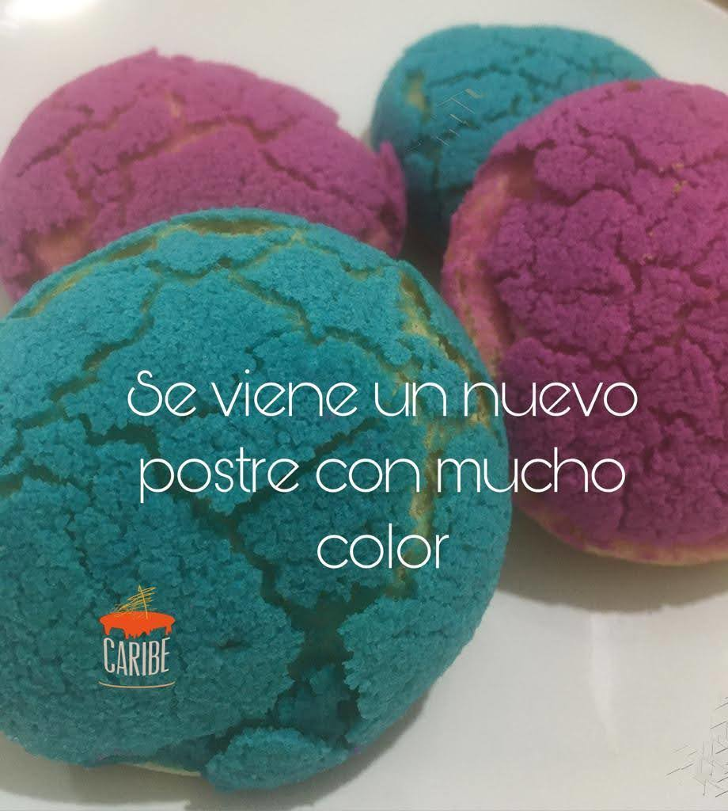

Nuevas golosinas


Un nuevo postre ideado con el proposito de agradar el paladary la sensación visual.Profiteroles rellenos de una untuosa crema pastelera sabor vainilla
Nuevo pastel creado con los más finos ingredientes Un cheesecake elaborado con el queso más fresco con un delicioso tope de jalea de maracuyá